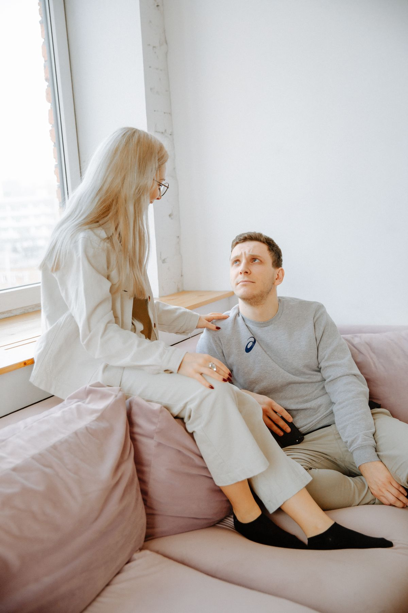

Richelmy Murta · Psicologia Clínica
Painel de Rastreios
Um único lugar para localizar, abrir e compartilhar os instrumentos utilizados no acompanhamento clínico. Cada rastreio mantém sua própria página, conteúdo e fluxo.

Nenhum rastreio corresponde ao filtro atual.